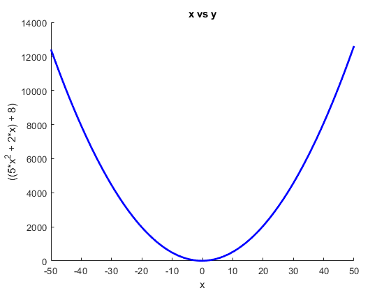
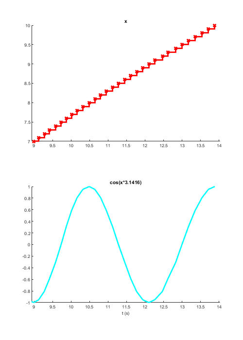
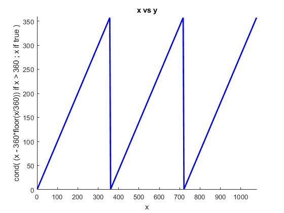
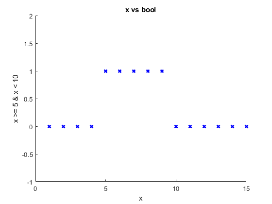
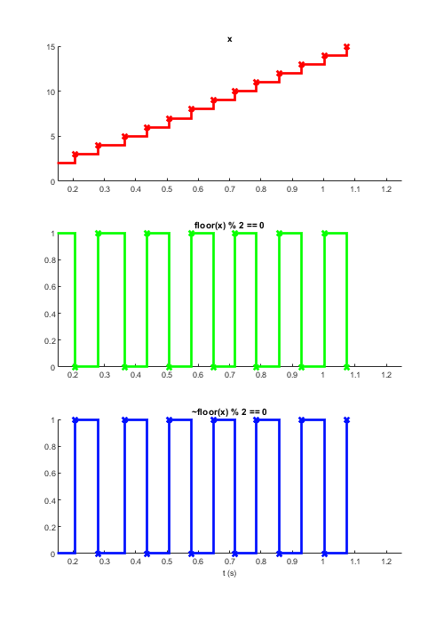

Writing an experiment definition
The purpose of this script is to introduce Signals and guide the reader towards programming in a less procedural way. After reading this you should will be able to create the experiments you want in Signals, using the Signals Experiment Framework. The guide may appear slow at first but sticking with it will greatly reduce the number of errors you will encounter while making your first experiment.
Contents
- Introduction
- What are signals?
- Relationships between signals
- Mathematical expressions
- Example 1: cos(x * pi)
- Example 2: x -> degrees
- Logical operations
- mod, floor, ceil
- Arrays
- Matrix arithmatic
- Complicated expressions
- Example 1: Upper bound
- Example 2: Gabor
- A note about Signals variables
- Signals only update when all their inputs have have values
- Conditional statements
- Indexing
- Indexing into a Signal
- Indexing with a Signal
- selectFrom
- indexOfFirst
- Calling functions with map
- Anonymous functions
- Example 2: a complex counter
- Sampling with map
- at and then
- Mapping constants
- Map multiple Signals through a function with mapn
- Notes
- Summary
- Etc.
Introduction
The live script that accompanies this document can be found in signals/docs/turorials/using_signals.m. This script allows you to run the blocks of code shown here and plot the values of signals live. To run a block of code, click on the section of interest and press Ctrl + Enter.
For the purposes of demonstration we can create signals using the sig.test.create function, however in you expDef you can only create new signals based on the function's inputs. More on this later.
function expDefFn(t, events, parameters, vs, inputs, outputs, audio)
Example expDefs can be found in signals/docs/examples.
The bracketed numbers throughout this script correspond to notes at the bottom of the file. The notes provide extra details about Signals. Please report any errors as GitHub issues. Thanks!
What are signals?
When writing an experiment definition (expDef), it's useful to think of signals as nodes in a network, where each node holds a value that is the result of passing its inputs through a function. This network is 'reactive' in that whenever a node's input values change, the node recalculates its own value. In this way changes propergate through the network asynchronously.

The above node graph would be the result of writing the following:
t = sig.test.create; % returns a signal phi = 2*pi*3*t; % a new signal, phi, that defines phase over time, t
Imagine the signal t was a clock signal whose value was a timestamp that constantly updated. The signal phi then updates it's value every time t updates. In this way you can express relationships between variables in an easy to read, mathematical way. One of these variables happens to be time, which means you can define how variables change over time. In the above example we have defined a temporal fequency in Hz (the value of t in your expDef is in seconds from experiment start). This can then be applied to a visual stimulus property, as shown in the example expDef driftingGrating.m.
Relationships between signals
Let's start to build a reactive network. Most of MATLAB's elementary operators work with signals in the way you would expect, as demonstrated below. You may type ctrl + enter to run this entire secion at once...
x = sig.test.sequence(-50:1:50, 0.05); % Create a sequence a = 5; b = 2; c = 8; % Some constants to use in our equation y = a*x^2 + b*x + c; % Define a quadratic relationship between x and y % Let's call a little function that will show the relationship between our % two signals. The plot updates each time the two input Signals update: ax = sig.test.plot(x,y,'b-'); xlim(ax, [-50 50]);

Mathematical expressions
Signals allows a good degree of clarity in defining methematical equations, particularly those where time is a direct or indirect variable
Example 1: cos(x * pi)
x = sig.test.sequence(0:0.1:10, 0.05); % Create a sequence y = cos(x * pi); sig.test.timeplot(x, y, 'mode', [0 2]); % Plot each variable against time

Example 2: x -> degrees
Let's imagine you needed a Signal that showed the angle of its input between 0 and 360 degrees:
x = sig.test.sequence(1:4:1080, 0.005); % Create a sequence y = iff(x > 360, x - 360*floor(x/360), x); % More about conditionals later sig.test.plot(x, y, 'b-'); xlim([0 1080]); ylim([0 360])

Logical operations
Note that the short circuit operators && and are not implemented in Signals, always use & and | instead.
x = sig.test.sequence(1:15, 0.2); % Create a sequence bool = x >= 5 & x < 10; ax = sig.test.plot(x, bool, 'bx'); xlim(ax, [0 15]), ylim(ax, [-1 2])

mod, floor, ceil
A simple example of using mod and floor natively with Signals:
x = sig.test.sequence(1:15, 0.2); % Create a sequence even = mod(floor(x), 2) == 0; odd = ~even; sig.test.timeplot(x, even, odd, 'tWin', 1);

Arrays
You can create numerical arrays and matricies with Signals in an intuitive way. NB : Whenever you perform an operation on one or more Signal objects, always expect a new Signal object to be returned. In the below example we create a 1x3 vector Signal, X, which is not an array of Signals but rather a Signal that represents a numrical array.
x = sig.test.sequence(1:5, 0.5); % Create a sequence X = [x 2*x 3]; % Create an array from signal x X_sz = size(X); % Reports the size of object's underlying value
Matrix arithmatic
Xt = X'; % X transpose
Y = Xt.^3 ./ 2;
Complicated expressions
Below are some examples of more complex mathematical expressions that can be defined in Signals.
Example 1: Upper bound

[a, b, c] = sig.test.create('names', {'a','b','c'}); upperBound = max([abs(a), abs(b), abs(c)]) / abs(a) * (1 + sqrt(5))/2; disp(upperBound.Name)
max([|a| |b| |c|])/|a|*3.2361/2
Example 2: Gabor
Let's reproduce the equation for generating a Gabor patch, i.e convolving a sinusoid with a 2D Gaussian function:

Where:


% Create some input signals for this demonstration. xx and yy are vectors % of the x and y coordinates of the Gabor, where (0,0) is the centre of the % Gabor patch [xx, yy, theta, sigma, lambda, phi] = sig.test.create(); % Create a 2-D grid coordinates based on the coordinates contained in % vectors xx and yy [X, Y] = xx.mapn(yy, @meshgrid); % Calculate the rotated x and y coordinates for the Gabor filter. The % rotated coordinates allow us to define an elliptical window rotated by % theta(1) Xe = X.*cos(theta(1)) + Y.*sin(theta(1)); Ye = Y.*cos(theta(1)) - X.*sin(theta(1)); % And the rotated coordinates for the grating Xc = X.*cos(theta(2) - pi/2) + Y.*sin(theta(2) - pi/2); % Define our Gaussian function gauss = exp(-Xe.^2./(2*sigma(1)^2) + -Ye.^2./(2*sigma(2)^2)); % The grating function scaled by the wavelegth and translated by the phase grate = cos( 2*pi*Xc./lambda + phi ); G = gauss.*grate; % Convolve the two functions % Rename a few of our signals for display purposes theta.Name = char(hex2dec('03bb')); % Orientation sigma.Name = char(hex2dec('03B8')); % Standard deviation of Gaussian envelope lambda.Name = char(hex2dec('03C3'));% Wavelength phi.Name = char(hex2dec('03C6')); % Phase offset Xe.Name = 'x'''; Ye.Name = 'y'''; % Rename to X' and Y' X.Name = 'x'; Y.Name = 'y'; % Rename to x and y % And print their names to the command window fprintf([... 'Gaussian equation: %s\n',... 'Grating equation: %s\n',... 'Convolved: %s\n'],... gauss.Name, grate.Name, G.Name)
Gaussian equation: exp((-x'.^2./2*?(1)^2 + -y'.^2./2*?(2)^2)) Grating equation: cos((6.2832*(x.*cos((?(2) - 1.5708)) + y.*sin((?(2) - 1.5708)))./? + ?)) Convolved: exp((-x'.^2./2*?(1)^2 + -y'.^2./2*?(2)^2)).*cos((6.2832*(x.*cos((?(2) - 1.5708)) + y.*sin((?(2) - 1.5708)))./? + ?))
The above code is simply a demonstration of how to express relationships mathematically in Signals. In the next tutorial we will look at creating stimuli in Signals. Spoiler: there's a function that creates a Gabor for you.
A note about Signals variables
Signals are objects that constantly update their values each time the Signals they depend on update. When you do an operation on a signal (e.g. x * 2) a new Signal object is created. This can be assigned to a variable (e.g. y = x * 2, however clearing or overwriting that variable does not affect the underlying Signal. The original object stays around until its inputs or the network are deleted. This is important to think about when writing expDefs. Think of variables as temporary labels for each object which can be moved around at any time without affecting the object they label. Consider the following:
% Create a new input signal and assign it to the variable 'a' a = sig.test.create(); % Derive a new signal from 'a' and assign it to the variable 'b' b = abs(a); % Reassign a value to 'a', e.g. a string. Think of this as taking a % sticker that says 'a' off the Signal object and placing it on a string % instead: a = "hello"; % assign "hello" to variable 'a'. % Note that this doesn't affect the Signal object originally assigned to % 'a', but now if you do something to 'a', you're not working with a Signal % anymore, but rather a char array: b = abs(a)
Undefined function 'abs' for input arguments of type 'string'.
% This may seem obvious but important to note as this can be unclear to % people not used to this way of programming. % % Likewise if you re-define a Signal, any previous Signals will continue % using the old values and any future Signals will use the new values, % regardless of whether the variable name is the same. Remember that % variable names are simply object handles so clearing or reassigning those % variable names doesn't necessarily change the underlying object: % Let's start with a blank slate clear variables % Create a new input signal, x, and assign it to the variable 'a' a = sig.test.create('names', "x"); b = a^2; % Derive a signal ('a^2') and assign it to variable 'b' c = b + 2; % Derive a new signal ('a^2 + 2') and assign it to variable 'c' b = a*3; % A new Signal object ('a*3') is assigned to the variable 'b' d = b + 2; % A new Signal object ('a*3 + 2') is assigned to the variable 'd'
The key here is that d has the value a*3 + 2 and not a^2 + 2, even though the variable b was at one point a^2. Counting each mathematical value in the above code block (i.e. mathematical variables and constants), how many nodes are in our network? The answer is 9 (see note 2).
Variables are like labels, if you reassign them they are no longer pointing to the same object.
Looking at the name of your Signals may help you better understand what they are
y = abs(a); disp(['y = ' y.Name]) y = y^2; disp(['y = ' y.Name]) z = [y y]; disp(['z = ' z.Name])
y = |a| y = |a|^2 z = [|a|^2 |a|^2]
It's fine to break long lines into multiple shorter lines by re-assigning to the same variable:
b = a * 2 * pi; b = abs(b); disp(b.Name)
b = |a*2*pi|
Signals only update when all their inputs have have values
As you may have noticed, signals can be derived from any number of other signals, as well as by constants(3). Mathematically, Signals can be viewed as variables which, any time they take a new value, cause any dependent equations to be re-evaluated.
This leads us to one of the most important things to consider when writing an expDef: Signals can only update if all (or enough) of their inputs have values.
At the beginning of an Experiment your expDef function is called and all your signals are wired up. Until the experiment starts however, none of these signals have any value. Each signal can only update its value when its inputs have updates and the time that this happens depends on how you wire your network.
In the below example we have signals x, a, b, and c. From these, we derive a new signal and assign it to 'y'. If x updates, y won't because the expression is still incomplete, we don't have values for a, b, or c. Likewise if b updates, y will remain unchanged and any signals derived from y will likewise not update. The signal y can only have a value once all the input signals have a value. When all inputs have values, a change to any of the inputs will cause y to be revaluated using the most recent value of all the inputs.
% Here we create four signals that each update in staggered fashion: x = sig.test.sequence(1:5, 1, 'delay', 1); % Update once per second after a second a = sig.test.sequence(1, 1, 'name', 'a', 'delay', 2); % Update after 2 seconds b = sig.test.sequence(1, 1, 'name', 'b', 'delay', 3); % Update after 3 seconds c = sig.test.sequence(1, 1, 'name', 'c', 'delay', 4); % Update after 4 seconds y = a*x^2 + b*x + c; sig.test.timeplot(x, a, b, c, y);

As you can see from the above plot, the signal 'y' does not update until all its input signals have values. When that happens
Conditional statements
Above we saw how logical operations work with Signals. These can also be used in conditional statements that alter the value or operation on a given Signal. Using an if/else statement won't work in your expDef. To construct something similar to an if/else statement, we can use the iff method:
% Create a signal whose values go from 1 - 200 x = sig.test.sequence(1:2:200, 0.05); % if x is greater than 100, y = 100, otherwise y = x y = iff(x > 100, 100, x); % Plot the results ax = sig.test.plot(x, y, 'k-'); ax.XLim = [0 200]; ax.YLim = [0 200];
% Note that with |iff| any and all values can be signals. % % In order to construct if/elseif statements we use the cond method, where % the input arguments are predicate-value pairs, for example: y = cond( ... x < 5, a, ... % If x < 5, y = a x > 10, b); % elseif x > 10, y = b
As with all Signals, the condition statement is re-evaluated when any of its inputs update. Any input may be a Signal or otherwise, and if no predicate evaluates as true then the resulting Signal does not update.
Likewise, the condition statement will terminate if any of the source Signals of a particular pred-value pair do not yet have values. Also, in the same way as a traditional if-elseif statement, each predicate is only evaluated so long as the previous one was false. For this reason, the order of pred-value pairs is particularly important. Below we use true as the last predicate to ensure that the resulting Signal always has a value.
y = cond(... x > 0 & x < 5, a, ... % if x between 0 and 5, y = a x > 5, b, ... % elseif x is greater than 5, y = b true, c); % else y = c
Indexing
Indexing into a Signal
Signals can be indexed as expected with brackets and the colon operator.
A = sig.test.create; a = A(2); % index second element of A B = A(5:end); % index elements 5 to array end
Indexing with a Signal
Another Signal may be used to index another Signal. In the below example we derive a signal indexes the value of A with the value of i. The resulting signal will update whenever i or A update, so long as both of them have a value.
i = sig.test.create; % Define a new Signal
a = A(i);
If the value of A has a length less than the value of i, an 'index out of bounds' error will be thrown, just like with normal arrays. One solution to this would be to use a conditional signal like the one in the previous section to deal with such cases:
i = iff(i > numel(A), numel(A), i); a = A(i);
selectFrom
The selectFrom method allows for indexing from a list of Signals whose values may be of different types. In some ways this is comparable to indexing to a cell array:
y = i.selectFrom(A, B, C); % when i == 1, y = A, etc.
NB: When the index is out of bounds the Signal simply doesn't update
indexOfFirst
The indexOfFirst method returns a Signal with the index of the first true predicate in a list of Signals. This has a similar functionality to find(arr, 1, 'first'):
idx = indexOfFirst(A > 5, B < 1, C == 5); % Better examples welcome!
Calling functions with map
Not all MATLAB functions work natively with Signals. For example, the function ischar does not play nicely with Signal objects:
A = sig.test.create; % Create an new signal B = ischar(A); class(B) % Note that B is not a Signal object but a boolean.
In the above example, MATLAB is testing the object itself, rather than the value of A (see note 4). For this reason B isn't a Signal object and will never be true, even is the value of signal A is a char. The solution to this problem is to use the map method.
map creates a new signal that calls an arbitraty function with the value of its input. This new signal's value is the output of the function you give it.
B = A.map(@ischar);
class(B) % Returns a Signal object
In the above example whenever signal A updates with a new value, its value is passed (or 'mapped') to the function ischar and the output (a boolean) becomes the value of signal B. This means that B will update its value whenever A updates. As usual, while A doesn't have a value, ischar is never called.
The @ symbol is MATLAB's syntax for a function handle. Instead of calling the function, you simply point to the function as if it is a variable. For more information, see the MATLAB documentation on creating function handles.
In the below example we create a signal that can checks whether its input is a char and if so, converts it to a number:
B = iff(A.map(@ischar), str2num(A), A);
Why use can we write str2num(A) and not ischar(A)? You can see which methods work natively with Signals by looking at the following list:
methods('sig.Signal') % All methods of the class sig.Signal
Methods for class sig.Signal:
Signal buffer delta floor keepWhen map2 mod onValue rot90 sin times abs bufferUpTo eq ge lag mapn mpower or round skipRepeats to all colon erf gt le max mrdivide output scan sqrt transpose and cond exp horzcat log merge mtimes plus selectFrom str2num uminus any cos fliplr identity lt min ne power setTrigger strcmp vertcat at delay flipud indexOfFirst map minus not rdivide sign sum
Methods of sig.Signal inherited from handle.
As you can see str2num is in the list but ischar is not. If in doubt, map will always work, it just looks a little uglier:
B = iff(A.map(@ischar), A.map(@str2num), A);
Another important thing to note is that operators like '==' and '*' are just convenient ways of calling normal functions (5). They actually correspond to the functions eq and times. Most of the time you can use either form but on occasion it's clearer to use one over the other.
B = iff(A.map(@ischar), strcmp(A, '10'), A == 10) B = iff(A.map(@ischar), strcmp(A, '10'), eq(A, 10)) % These are equivalent
The functions you call using map can be any function include your own non-builtin functions (although they need to be on the MATLAB search path). You can also define local functions in your expDef and map values with those. The functions used by map don't need to deal with Signal objects as they only get called with a signal's value.
What if your function expects single but your input signal's value is a double? Simply typecast it with map!
B = A.map(@single).map(@myfunc);
The value of A is called on single and its output is then called on myfunc. You'll notice that many Signals methods can be chained in this way, which is convient for writing one-liners. If your line becomes too long or difficult to read you can also split it across a number of lines:
B = A.map(@single); B = B.map(@myfunc);
Anonymous functions
Sometimes your Signal must be in a different positional argument. For this we simply create an anonymous function and use that. See the MATLAB doumentation for more information on how to use these.
delta = A.map(@(A) diff(A,1,2)); % Take 1st order difference over 2nd dimension a = A.map(@(A) sum(A,2)); % Take sum over 2nd dimension
You may have noticed that our other example can be written using an anonymous function as a wrapper so that map is called just once:
B = A.map(@(v) myfunc(single(v)));
Any of these variants will work just fine and there is no real atvantage to which one you choose, however if you need to access the intemediate value (i.e. single(v), it is better to use the former example.
Example 2: a complex counter
In the following example we have a signal, responseType, that may be an element of [-1 0 1]. A response type of 0 means the trial timed out before the subject gave a response. Let's say we want to count the number of times in a row a trial timeout occurs:
% First we store the responseType values for up to the last 1000 trials timeOuts = responseType.bufferUpTo(1000); % Then count the number of recent timeouts that occured in a row using an % anonymous function that works on this array with find and sum: timeOutCount = timeOuts.map(@(x) sum(x(find([1 x~=0],1,'last'):end) == 0));
Sampling with map
Map is particularly handy for 'sampling' functions, that is, for generating a new index, value, or whatever, each time an event occurs. Below we derive a signal, 'side', that each time 'newTrial' updates takes a new value from [-1 1] (technically 0 is also possible!). Note that the anonymous function discards the value of newTrial. We're only using it as a way to trigger the evaluation of this function.
newTrial = sig.test.create; side = newTrial.map(@(~) sign(rand-0.5));
at and then
Here we also introduce two more methods: at and then. These functions sample the value of a Signal each time another Signal updates. What's more, the Signal that updates must evaluate to true:
x = sig.test.sequence(1:15, 0.2); % Create a sequence bool = x >= 5 & x < 10; y = x.at(bool); ax = sig.test.plot(x, bool, 'bx'); xlim(ax, [0 15]), ylim(ax, [-1 2]) % This may also be achieved with keepWhen: y = x.keepWhen(x > 5 & x < 10); % NB c.f. with at, then and skipRepeats y = net.origin('y'); updatedAndTrue = y.at(updated); % updatedAndTrue = updated.then(y); % then is the same as at but with the % inputs in a reverse order. This is simply to make things more % self-documenting. updatedAndTrue = x.at(y > 3); h = output(updatedAndTrue);
Mapping constants
Sometimes you want to derive a Signal whose value is always constant but nevertheless updates depending on another Signal, thus acting as a trigger for something. This can be achieved by using a constant value instead of a function in map. For example below we produce a signal that is always mapped to true and updates whenever its dependent value updates.
correct = sig.test.create; % imagine this signal can update with 0 or 1 trigger = correct.map(true) % Sometimes you want to sample one signal at the time that another updates, % regardless of whether it's value evaluates true. For this we can simply % map that signal to a constant value, in this case 'true': z = x.at(y); zi = x.at(y.map(true)); ax = sig.test.timeplot(x, y, z, zi, 'mode', [0,1,0,0], 'tWin', 10); % Run this loop manually for i = 1:50 x.post(i) pause(0.3) if rand > .5 y.post(rand > .5) end end % Note that if the input arg is a value rather than a function handle, it % is truely constant, even if it's the output of a function: c = x.map(rand); rnd = x.map(@(~)rand); % The tilda here means that the value of Signal x is ignored, instead of % being assigned to a temporary variable or being mapped into the functon % rand, thus rand is called with no arguments.
Map multiple Signals through a function with mapn
mapn takes any number of inputs where the last argument is the function that the other arguments are mapped to. The arguments may be any combination of Signals and normal data types. It's important to note that the below 'dot notation' only works if the first input is a Signal, otherwise you must use the traditional syntax e.g. mapn(5, A, @f)
B = A.mapn(n, 1, @repmat); % repmat(A,n,1) % NB: Map will only assign the first output argument of the function to the % resulting Signal. Mapping to a variable number of output Signals will be % possible in the next version of Signals: a = net.origin('a'); [b,n] = a.mapn(@shiftdim); % b is 3-by-1-by-2 and n is 2. c = b.mapn(-n, @shiftdim); % c == a. d = a.mapn(3, @shiftdim); % d is 1-by-2-by-1-by-1-by-3. a.post(rand(1,1,3,1,2))
Notes
(1) If a signal already has a value and you derive a new signal from it, the new signal won't automatically compute its value. In the Signals Experiment Framework, the experiment definition function is run once to set up all Signals, before any inputs are posted into the network, so this isn't an issue.
(2) You can get the number of nodes in the network by calling networkInfo on the net id:
networkInfo(a.Node.Net.Id)
Net 0 with 9/4000 active nodes
(3) As you may have noticed from the node graphs, when you evaluate an expression involving a signal, any numbers are made into Signal objects. These are nodes that only ever have one value (known as 'root' nodes). There are often more nodes in a network than you might expect, for example the following line indicates that there are at least 4 nodes in the network:
x = mod(floor(x), 1*2)
These would be x, 2 (a root node), floor(x) and mod(floor(x), 2).
(4) When a function is called on an object, MATLAB checks whether that object's class has a method of the same name (a 'method' is a function that is part of an object's class). If the class has that method associated with it, this method is called instead of the usual function. This is known as 'overloading' and is how we can do things like adding and subtracting Signals. For more info, see the MATLAB documentation here.
(5) This is known as 'syntactic sugar', and a list of MATLAB's operators and the functions they correspond to can be found here.
Summary
Here are the most important things to remember when writing an experiment:
- Signals represent values that change can over time.
- Evaluating any expression that includes a signal will result in a new signal being returned, e.g. is 'a' is a signal, 'a * 2' produces a new signal.
- In general a signal can only update when all of its inputs have a value.
- Clearing or reassigning a variable is different to deleting or modifying a signal.
- Signals can have any value type: if one of your signals changes data type, make sure all dependent signals can work with those types.
Etc.
Author: Miles Wells
v0.0.2
%#ok<*NASGU,*NOPTS,*ST2NM>